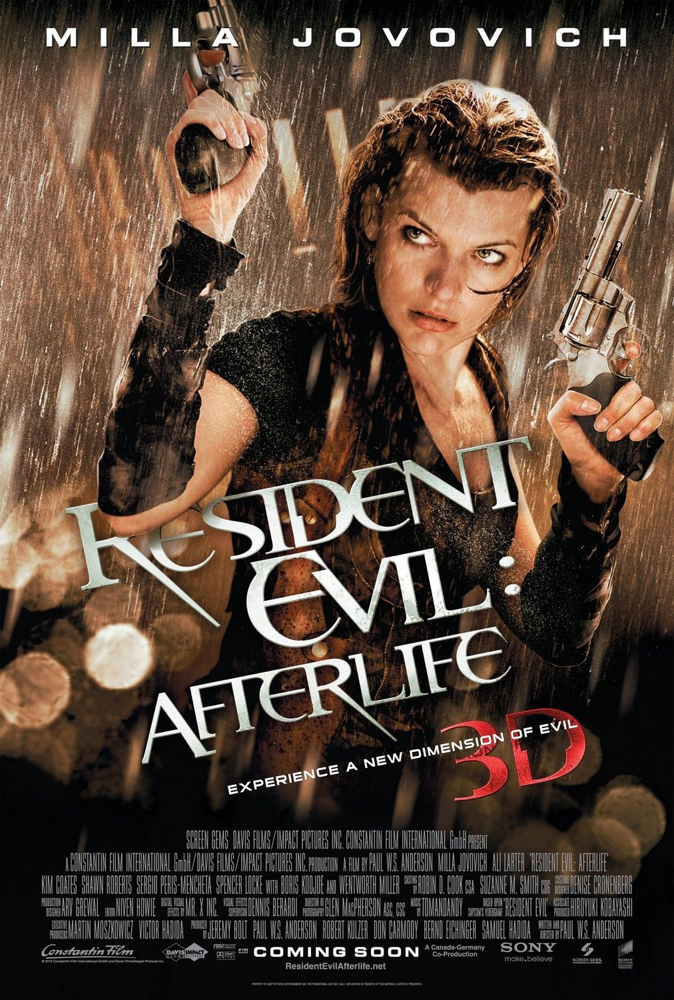
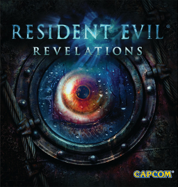
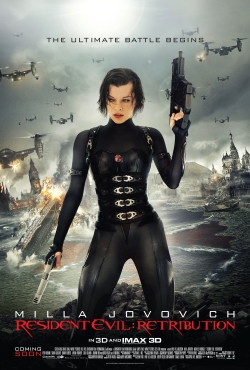
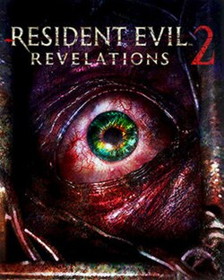
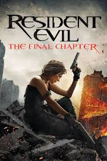

| 2010 |

|
Resident Evil: Afterlife — Film
[Film #4]
Alice and a group of survivors seek sanctuary in Arcadia off the Los Angeles coast.
Chris and Claire Redfield appear together for the first time in the film series.
Albert Wesker makes his live-action debut.
Theatrical · DVD / Blu-ray
|
| 2012 |

|
Resident Evil: Revelations
[Spin-off]
Originally on Nintendo 3DS. Jill Valentine investigates the cruise ship Queen Zenobia,
battling mutant Ooze creatures.
A deliberate return to atmosphere and tension after RE5's action focus.
Platforms: 3DS · PS3 / Xbox 360 / PC / Wii U · PS4 / Xbox One
|
| 2012 |

|
Resident Evil 6
[Mainline #7]
The most ambitious and most divisive entry. Four interwoven campaigns:
Leon, Chris, Jake Muller (Wesker's son), and Ada Wong.
Global bioterrorism on an unprecedented scale.
Platforms: PS3 · Xbox 360 · PC · PS4 / Xbox One (2016)
|
| 2012 |

|
Resident Evil: Retribution — Film
[Film #5]
Alice is captured by Umbrella Prime, a vast underwater testing facility.
Classic game characters return as enemies: Rain, Carlos, One.
Theatrical · DVD / Blu-ray
|
| 2015 |

|
Resident Evil: Revelations 2
[Spin-off]
Claire Redfield and Barry Burton's daughter Moira are abducted to a mysterious island facility.
Released episodically. Features the series' most psychologically unsettling villain: Natalia Korda.
Platforms: PS3 / PS4 · Xbox 360 / One · PC · PS Vita
|
| 2016 |

|
Resident Evil: The Final Chapter — Film
[Film #6]
Alice returns to Raccoon City for the final confrontation with the Red Queen and Umbrella.
Reveals the true origin of the T-Virus and Alice's identity.
Grossed $312M worldwide — the highest of the entire film series.
Theatrical · DVD / Blu-ray
|
| 2017 |

|
Resident Evil 7: Biohazard
[Mainline #8]
A complete reinvention. First-person perspective, Louisiana bayou, the Baker family.
Ethan Winters searches for his missing wife Mia and finds something far worse than he imagined.
Fully playable in PlayStation VR.
Platforms: PS4 · Xbox One · PC · Nintendo Switch (Cloud)
|
| 2019 |

|
Resident Evil 2 (Remake)
[Remake]
A ground-up reconstruction using the RE Engine.
Mr. X redesigned as a map-wide stalker who cannot be permanently stopped.
Won numerous Game of the Year awards.
Platforms: PS4 · Xbox One · PC · PS5 / Xbox Series
|